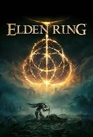

Conner Powell
nov/06/2009
this is a webpage about me, conner powell
A few things about me are that
I like to play video games
I like to crochet
I like math and programing
I like music
I also like to paint models
one game i really like to play right now grounded two
grounded two is esentially a game version of honey I shrunk the kids
because you play as one of four teens
I like to play as pete because in my opinion pete is the best looking player model
compared to the other player models.
I like grounded two for a couple of reasons.
the gameplay is amazing it has a great story to go along with.
it has bosses
that you can fight, and it has bugs that you can ride, and the bugs are super realistic.
most of the models look exactly like
the bugs in real life and the fighting mechanics are super fun.
they have classes like in dnd that have passive buffs when
you use certain weapons in game.
like bows axes hammers and spears just to name a few, and just a bit back they added a new
underwater area.
that added a new boss and a lot of new enemies and they also added in a bunch of new resources.
they made new
assets for some bugs that were in the last game, and we got some lost assets from the last game.
that they didnt fully put into the
last game so they reworked them and added them into the second one.
like a lizard boss named king dozer that was supposed to make it into
the last game but didnt,
and they made the map three times bigger than the original map.
one other game I like to play is elden ring i like elden ring because it is a really challanging game to play.
it has a lot of mechanics like a leveling system where you have to get a currency by killing enemies and then
spend the currency to upgrade certian stats like strength, decterity, vigor, mind, endurance, intelligence, faith, and arcane.
I also like to lay elden ring because it has mutiple bosses to fight, and it is a open world game so you can play however you want
and there is a story to follow, and it has different starting classes like hero, bandit, astrologer, warrior, prisoner, confessor,
wretch, vagabond, prophet, and samurai. all with different starting stats and starting weapons, and the creators allow people to create and play with mods

a couple of resons I like crocheting is because.
it is really easy once you learn and you can make a lot of different things.
like
plushes clothes blankets scafs and the only limit is your imagination.
and yarn but other than that you can make almost anything that
comes to mind.
some reasons I like math and progrmaing is because math is challanging, and it forces you to know and pay attention to what you
are doing.
because if you mess up you won't get the right answer, and I like programing because it also uses math,
and I've always
had a intrest in how things work and the programing behind like with games and robots and web pages.
I like music because it is so interesting to see and hear what seems like random noise come together when listening to music or playing music because anyone can make music
and no matter what age you are you will be able to play music if you know how to play a instrument and read music I love playing music in band and the only thing I regret is that
I didn't join in fifth grade when we first got the opertunity I love playing at the football games and getting to talk to other people play or people who play my instrument
even if we don't end up everyone still has fun because its about playing and having fun.
I like to paint and put together models because of the attention to detail.
you have to have to make a model look amazing.
the one model im working on right now is hoppers car from stranger things,
and I have put so much time and effort to get everything
looking accurate to the show with the colors and the placement of certian things.
like one thing that was included in the model was his
hat, and they want you to just stick it on the dash board and just call it a day,
but I put it near the wheel because thats where he puts
it in the show.